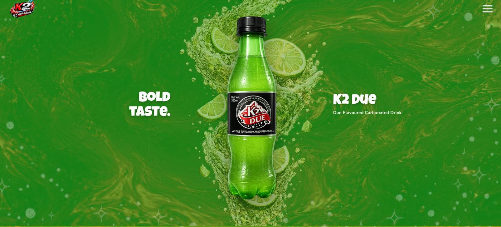
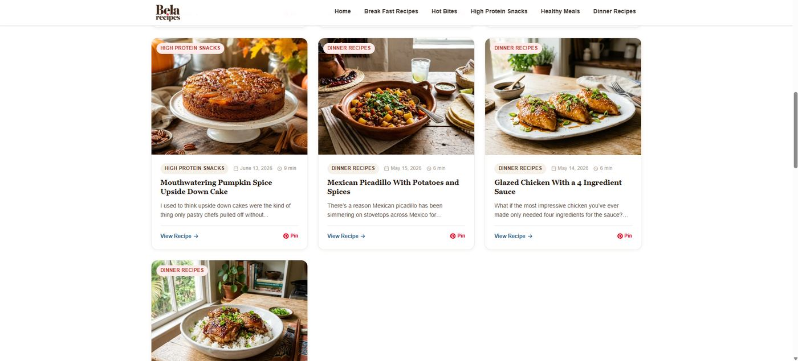
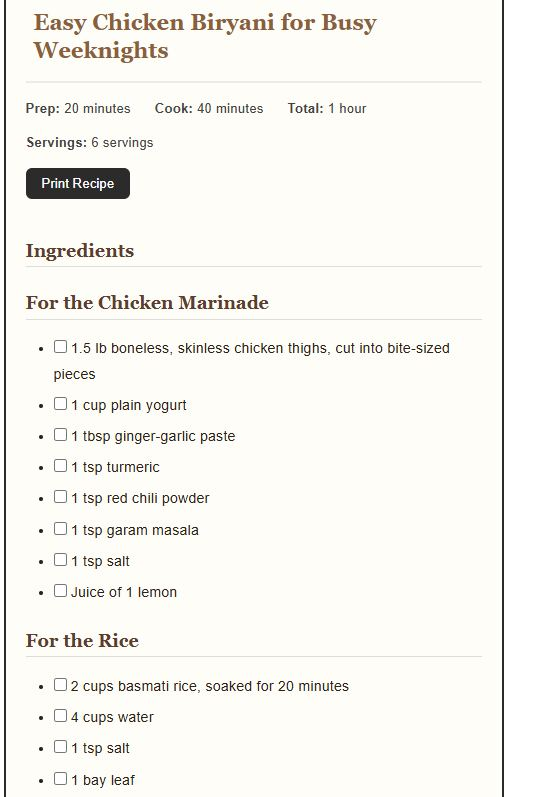
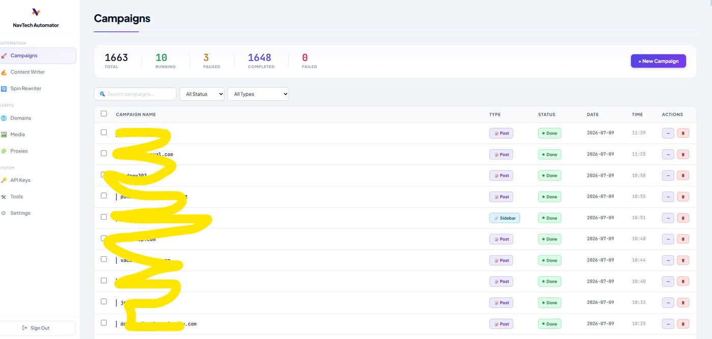
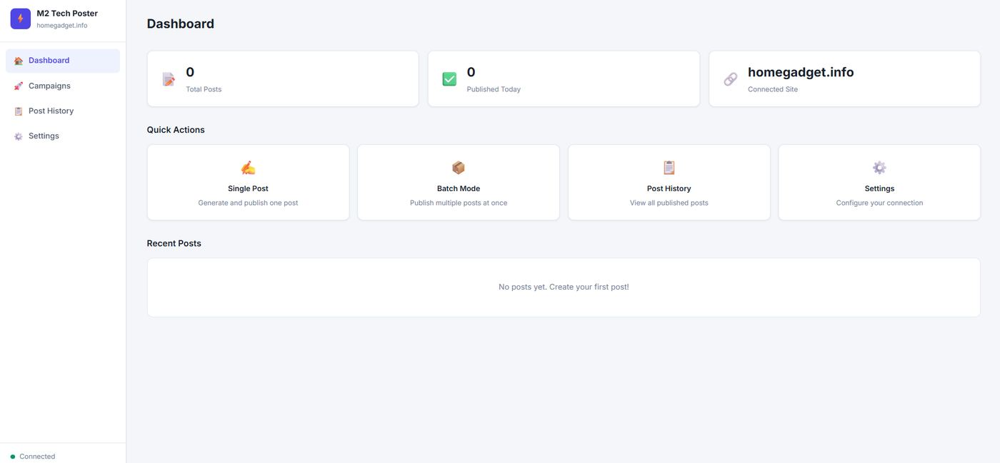
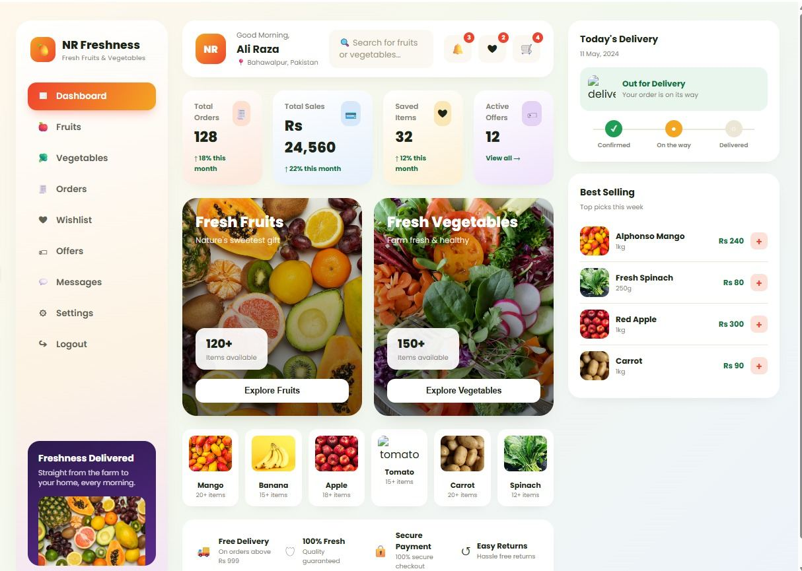
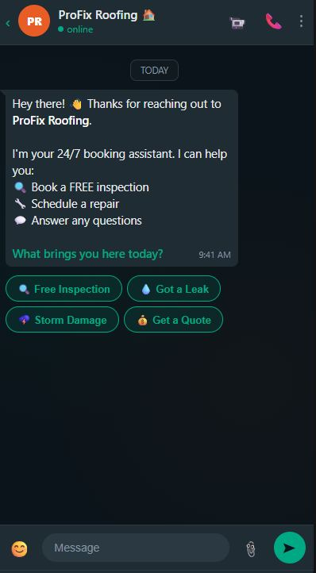

I build the systems that run your business while you sleep_
Since 2017 I've designed websites, built AI automation tools, and shipped chatbots for freelance clients — work that now manages 50+ sites and removes hours of manual work every day.
Five disciplines, one goal: less manual work for you.
I don't just design a site or write a script — I connect design, development, SEO, and AI so the whole system runs itself after handoff.
Web Design & Development
Full websites from Figma concept to live WordPress, Webflow, or Shopify build.
AI Automation
Custom tools that write, post, and manage content across dozens of sites without you touching a keyboard.
AI Chatbots
Booking and support bots that answer, qualify, and schedule — so your front desk doesn't have to.
SEO & Local SEO
On-page, technical, and local SEO to get real businesses found by real customers.
UI/UX Design
Interfaces designed around how people actually use them — dashboards, product pages, admin panels.
AI & SEO Tools
I also source and resell vetted AI and SEO tools for teams that want the stack without building it.
Seven systems, seven different problems solved.
Live sites, custom plugins, and automation tools built for freelance clients across e-commerce, content, and services.

LiveK2 Beverages
Complete brand website design and build for a Pakistani beverage company — from Figma to live launch.

LiveBela Recipes
A custom-built WordPress theme for a recipe blog, designed for fast browsing across categories — built around recipe content, not a generic blog template.

Client toolRecipe Maker Plugin
Reads a post's content, auto-detects ingredients and steps, and generates a formatted recipe card — prep time, servings, print button, no manual formatting.

Client toolNavTech Automator
WordPress automation engine for a client's PBN network — auto-posts content, inserts backlinks, and runs a content spin-rewriter across 1,600+ campaigns.

Client toolM2 Tech Poster
SEO blog automation for client "M2 Tech" — writes full posts with images, inserts backlinks, and publishes to WordPress in single or batch mode.

Private clientNR Freshness
Full design and development of a fruits & vegetables delivery platform — order tracking, wishlist, offers, and a best-sellers dashboard.

LiveProFix Roofing Assistant
A 24/7 booking chatbot that qualifies leads, books free inspections, and answers questions — no front-desk staff required.
An SEO background that grew into an AI practice.
I'm Muhammad Ali Qureshi, an AI expert based in Bahawalpur, Pakistan. After completing my SEO training from PIT, I stepped into the world of AI — and haven't looked back. Since 2017, I've delivered dozens of projects spanning website design & development, AI-powered automation tools, and intelligent chatbots that save businesses real time and money.
SEO course — PIT Institution
Started with a formal SEO training program, learning on-page, technical, and search fundamentals that still shape how I approach every project today.
Freelance web design & development
Began taking on freelance clients for website design and development — Figma to WordPress, Webflow, and Shopify builds — while continuing to specialize in SEO and local SEO.
Stepped into AI automation
Moved from designing sites to building the systems behind them: Python and n8n-based tools that write, post, and manage content automatically, plus AI chatbots for front-desk work.
AI expert & automation builder
Running and maintaining automation tools across 50+ client sites, building AI chatbots for service businesses, and sourcing AI/SEO tools for teams that want the stack without the build.
<design/>
- Figma
- Adobe XD
- Canva
<web/>
- HTML / CSS / JS
- WordPress
- Webflow
- Shopify
<ai_automation/>
- ChatGPT
- Claude
- n8n
- Make / Zapier
- Python
- LangChain
<seo/>
- SEMrush
- Ahrefs
- Google Search Console
- Local SEO tools
Tell me what you're trying to build.
Whether it's a full website, an automation tool, or an AI chatbot — send the details and I'll reply honestly about scope, timeline, and whether it's a good fit.
WhatsApp (primary)
+92 304 2349059WhatsApp (alternate)
+92 309 7083595Location
Bahawalpur, Punjab, PakistanWhatsApp usually gets the fastest reply. For detailed briefs with files or documents, email works best.